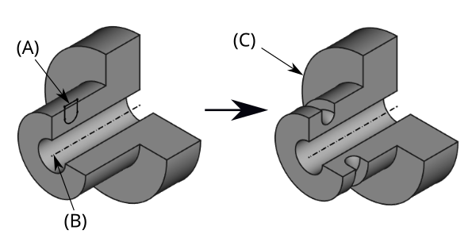
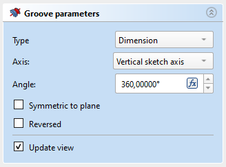

PartDesign Groove/ro
|
|
| Menu location |
|---|
| PartDesign → Groove |
| Workbenches |
| PartDesign, Complete |
| Default shortcut |
| None |
| Introduced in version |
| - |
| See also |
| None |
Descriere
Instrumentul Canelură/ Groove, învârte o schiță sau un profil selectat pe o anumită axă, tăind materialul din suport.
{kind=link}

Above: sketch (A) is revolved around axis (B); resulting groove on solid (C) is shown right.
Cum se folosește
- Selectați schița care va fi rotită.
- v0.17 and above A face on the existing solid can alternatively be used.
- v0.16 and below The sketch must be mapped to the planar face of an existing solid or Part Design feature, or an error message will appear .
- Press the Groove button.
- Set the Groove parameters (see next section).
- Press OK.
{kind=link}
Opţiuni
Atunci când este crată o canelură, dialogul privind Groove parameters oferă câteva variante de parametrii care specifică cum schița profilului canelurii poate fi rotită.
 |
AxeTypeType offers five different ways of specifying the angle of the groove: AngleEnter a numeric value for the Angle of the groove. With the option Symmetric to plane the groove will extend half the given angle to either side of the sketch or face. Through allThe groove will extend up to the last face of the support it encounters in its direction. With the option Symmetric to plane the groove will cut through all material in both directions. To firstThe groove will extend up to the first face of the support it encounters in its direction. Up to faceThe groove will extend up to a face. Press the Face button and select a face or a datum plane from the Body. Two anglesThis allows to enter a second angle in which the groove should extend in the opposite direction. The directions can be switched by checking the Reversed option. AxisSpecifies the axis of the groove: This option specifies the axis about which the sketch is to be revolved.
Note that when changing the axis, the Reversed option may be (un)checked automatically.
UnghiulThis controls the angle through which the groove is to be formed, e.g. 360° would be a full, contiguous revolution. It is not possible to specify negative angles (use the Reversed option instead) or angles greater than 360° . introduced in 1.1: If the Show interactive draggers when editing features preference is selected, the angle can be adjusted with an interactive gizmo in the 3D View. 2nd angleDefines the angle of the groove in the opposite direction. This option is only available if Type is Two angles and Angle is smaller than 360°.
Planul simetricIf checked, the groove will extend half of the specified angle in both directions from the sketch plane . ReversedIf checked, the direction of revolution is reversed from default clockwise to counterclockwise . |
{kind=link}
Proprietăți
Data
Groove
- DateType (
Enumeration) - DateBase (
Vector): (read-only) - DateAxis (
Vector): (read-only) - DateAngle (
Angle) - DateAngle2 (
Angle) - DateUp To Face (
LinkSub) - DateReference Axis (
LinkSub)
Part Design
- DateRefine (
Bool)
Sketch Based
- DateProfile (
LinkSub) - DateMidplane (
Bool) - DateReversed (
Bool) - DateAllow Multi Face (
Bool)
Notes
- 0.21 and below: A
 ShapeBinder cannot be used for the profile.
ShapeBinder cannot be used for the profile. - 0.21 and below: When using a
 SubShapeBinder for the profile, selecting the binder in the Tree View will fail, instead the binder's face has to be selected in the 3D View.
SubShapeBinder for the profile, selecting the binder in the Tree View will fail, instead the binder's face has to be selected in the 3D View.
- Helper tools: New Body, New Sketch, Attach Sketch, Edit Sketch, Validate Sketch, Check Geometry, Sub-Shape Binder, Clone
- Modeling tools:
- Additive tools: Pad, Revolution, Additive Loft, Additive Pipe, Additive Helix, Additive Box, Additive Cylinder, Additive Sphere, Additive Cone, Additive Ellipsoid, Additive Torus, Additive Prism, Additive Wedge
- Subtractive tools: Pocket, Hole, Groove, Subtractive Loft, Subtractive Pipe, Subtractive Helix, Subtractive Box, Subtractive Cylinder, Subtractive Sphere, Subtractive Cone, Subtractive Ellipsoid, Subtractive Torus, Subtractive Prism, Subtractive Wedge
- Boolean: Boolean Operation
- Dress-up tools: Fillet, Chamfer, Draft, Thickness
- Transformation tools: Mirror, Linear Pattern, Polar Pattern, Multi-Transform, Scale
- Additional tools: Shape Binder, Involute Gear, Sprocket, Shaft Design Wizard
- Context menu: Suppressed, Set Tip, Move Object To…, Move Feature After…
- Preferences: Preferences, Fine tuning
- Getting started
- Installation: Download, Windows, Linux, Mac, Additional components, Docker, AppImage, Ubuntu Snap
- Basics: About FreeCAD, Interface, Mouse navigation, Selection methods, Object name, Preferences, Workbenches, Document structure, Properties, Help FreeCAD, Donate
- Help: Tutorials, Video tutorials
- Workbenches: Std Base, Assembly, BIM, CAM, Draft, FEM, Inspection, Material, Mesh, OpenSCAD, Part, PartDesign, Points, Reverse Engineering, Robot, Sketcher, Spreadsheet, Surface, TechDraw, Test Framework
- Hubs: User hub, Power users hub, Developer hub